200 low-poly pieces proposed for the low-gravity Moon shooter, and the first 22 built: 58,492 triangles in all. Each one is made of named parts with real materials. Panel seams, brushed metal and rock pits are baked into colour, roughness and normal maps, so they still look solid up close in first person. Every part also knows its own mass, so low gravity can throw it honestly.
The look follows the Moon Heroes "Faceted Hero" direction: flat planes, gunmetal and off-white hull, orange for people and warm windows, green, amber and red lamps for state. Cyan is kept for the Star Child and crystals, and gold for Daddy's memory coins. The heroes, buggy and lander belong to the Moon Heroes study.
Inspiration: the Moon Mission pack's baseAbbie at the base: the scale we build for
The 22, built
Round 2 rebuilds each piece against its Midjourney pick: chunky off-white modules held by dark bumper frames, with warm orange windows. Top left is the pick, top right the model (tap "Spin it" to turn it), bottom left what Abbie sees from her own eye height, and bottom right round 1, drawn before the picks existed.
MK-001
Solar array on a sun-tracking mast
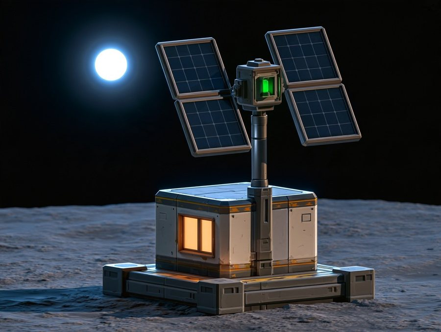
The Midjourney pickRound 2, the modelAbbie's eye, 1.1 m
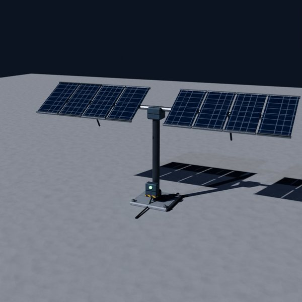
Round 1, before the pick
A framed equipment hut with a warm window on a wide dark plinth, a gunmetal mast rising through it to a slewing head with a green "power good" lamp, and two tilted wings of framed dark-blue cells. Diegetic: if the base is short of power, the lamp and the hut window go amber.
The Midjourney pickRound 2, the modelAbbie's eye, 1.1 m
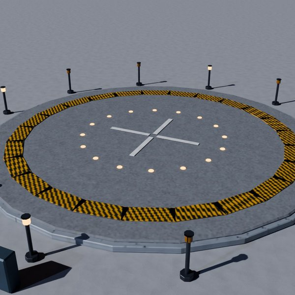
Round 1, before the pick
A raised round pad 12 m across on a thick segmented plinth with warm orange windows all round its side, a hazard-gold ring and target circles on the deck, and a ring of beacon posts with amber lamps that chase toward the pad when a lander is inbound (the diegetic approach signal; closes the remaster study's open beacon-ring item).
The Midjourney pickRound 2, the modelAbbie's eye, 1.1 m
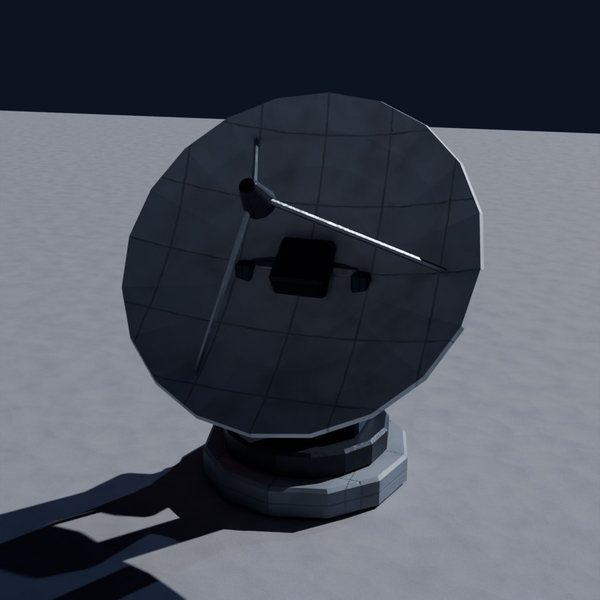
Round 1, before the pick
A domed, framed turntable housing with warm orange windows, a yoke and a 3.2 m panelled dish with a feed on three struts and a red blinker. It turns to follow Earth; when it is talking to home the windows pulse and the turntable hums.
The Midjourney pickRound 2, the modelAbbie's eye, 1.1 mRound 1, before the pick
A chunky framed furnace block on four splayed legs, a hopper on top, a glowing furnace mouth at the front with a tray of sintered bricks, an exhaust elbow on the side and a warm side window. Diegetic: the mouth glows while it cooks, the stack puffs slow dust, and bricks pile up on the tray.
The Midjourney pickRound 2, the modelAbbie's eye, 1.1 m
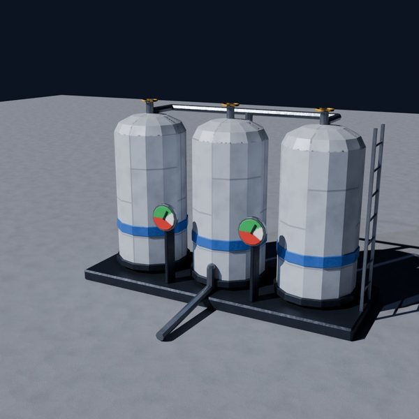
Round 1, before the pick
Three tall white capsule tanks on a steel skid, each with a blue band, a warm frost window down its side and a valve on top, joined by a manifold with valve wheels and two big pressure dials at the foot. Diegetic: the dials and the glow level in the windows say how much air the base has.
Triangles
3,736
Parts
37
Mass
5,832.4 kg
Moon weight
964.7 kg
Size m
3.6 × 1.6 × 3.14
Metal GunmetalMetal HazardMetal HullMetal OxygenBlueMetal SteelPaint DialPlastic DarkWindow Warm
MK-028
Base tower and antenna
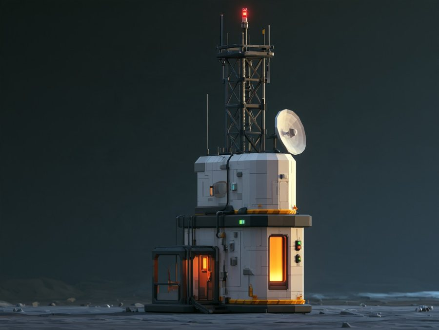
The Midjourney pick
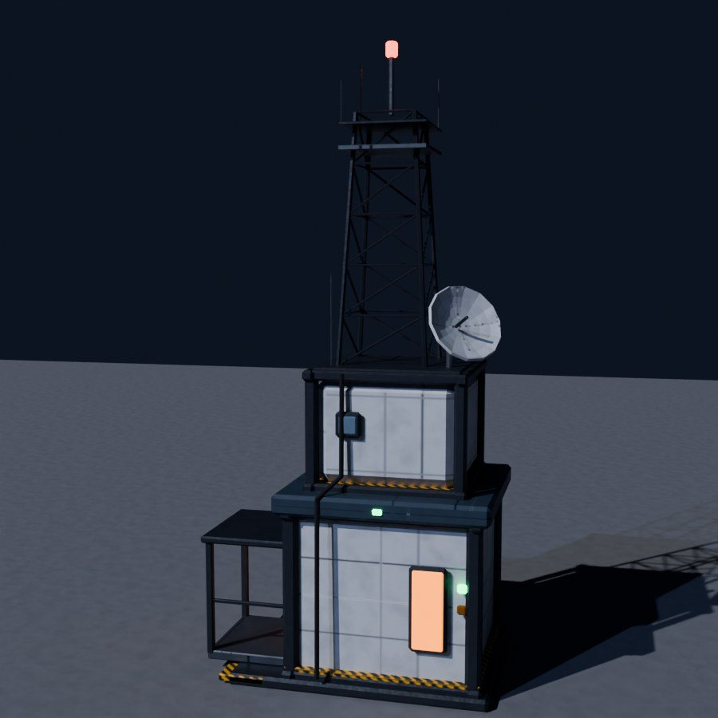
Round 1, the model
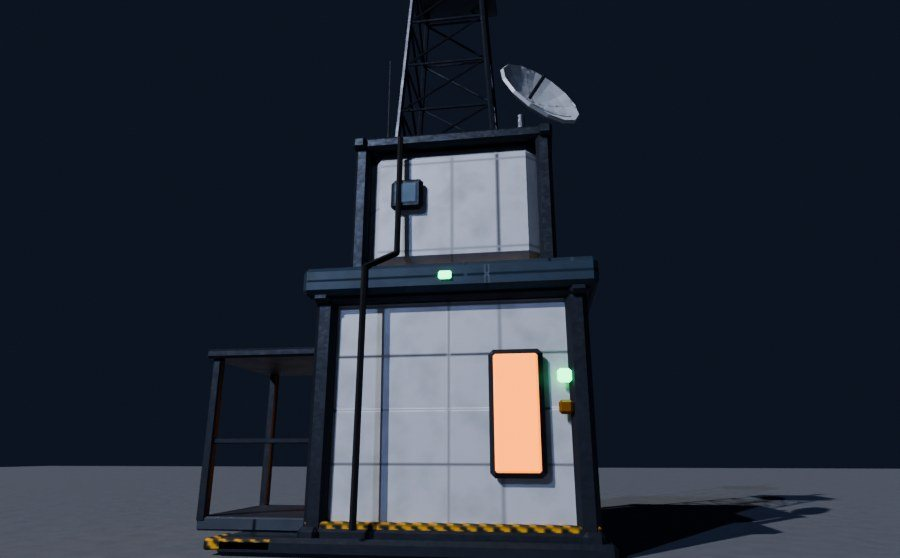
Abbie's eye, 1.1 m
Matched to the Midjourney pick: a two-storey framed tower block (a wide lower storey with a tall warm window and green/amber status lamps, a dark slab band with hazard trim, a narrower upper storey with a porthole), a framed porch with a glowing door, a dish on the roof, and a lattice mast with a work platform, whip antennas and a red beacon on top. The beacon is the base's landmark: you can see it from anywhere on the Moon tile, and it blinks faster when someone is calling home.
Matched to the Midjourney pick: a 10 m geodesic dome of triangle panels, mostly off-white hull with a band of dark glass, a few big lower panes glowing warm orange from the living room inside, all held by a dark gunmetal strut frame. It sits on a chunky ring foundation of framed segments with an orange stripe and little status lamps, and a framed entrance tunnel with an arched door frame, an inner hatch and two warm windows. Diegetic: the warm panes dim when everyone is out, and the tunnel lamp goes green when the airlock is ready.
The Midjourney pickRound 2, the modelAbbie's eye, 1.1 m
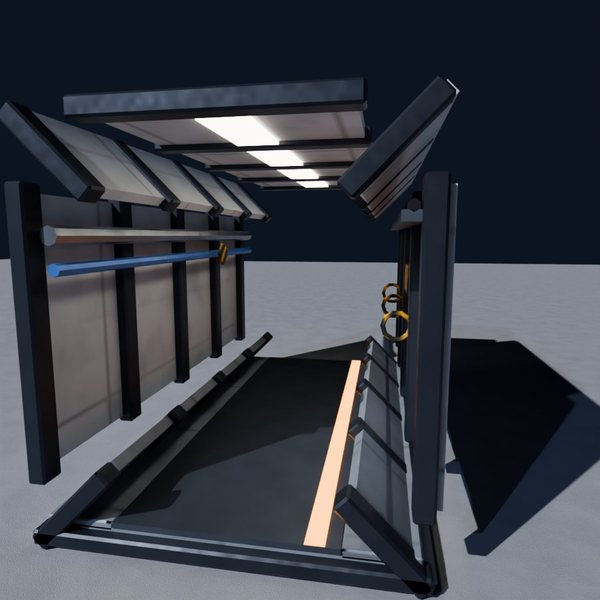
Round 1, before the pick
The kit's base piece, 4 m on the 2 m grid, an octagonal tube with thick dark end frames and two mid ribs, off-white hull panels outside with small orange windows, and a warm inside: wall ribs, a grated floor with an orange wayfinding stripe (follow it home), a light strip, a pipe run and handholds for low gravity.
The Midjourney pickRound 2, the modelAbbie's eye, 1.1 m
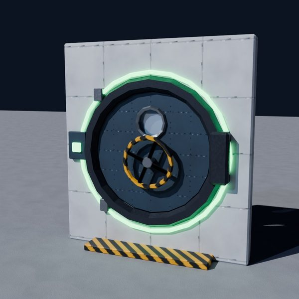
Round 1, before the pick
A deep bezelled round hatch in a panelled wall, a big orange porthole in the middle of the door, a green door-state ring (green: the next module holds air; amber: cycling; red: stop), a chunky hinge on the left and latch dogs on the right, and a locking wheel.
The Midjourney pickRound 2, the modelAbbie's eye, 1.1 m
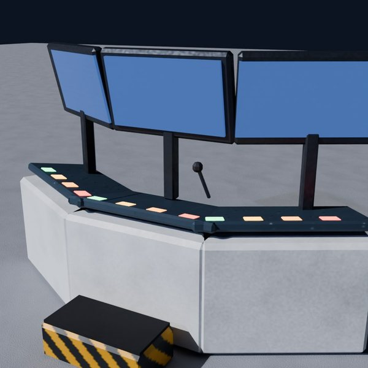
Round 1, before the pick
One chunky framed console block with a raised hood holding three Earthlight screens and an orange status window, a sloped key deck of chunky coloured buttons, a lit service door below, and a little step in front so Abbie can climb up (adults stand, she climbs).
The Midjourney pickRound 2, the modelAbbie's eye, 1.1 mRound 1, before the pick
Each capsule is a chunky framed module with an open side showing a blue mattress, pillow and warm reading lamp, a slatted shutter beside it, an orange window at the head end and an amber ladder. Diegetic: a closed shutter with the lamp off means someone is asleep.
The Midjourney pickRound 2, the modelAbbie's eye, 1.1 m
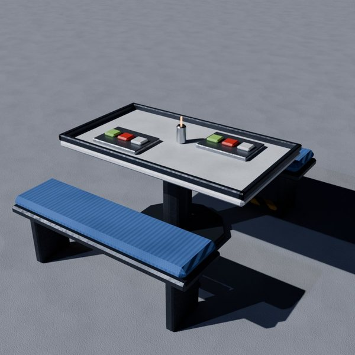
Round 1, before the pick
A round table on one floor-pinned pedestal with a raised lip so things don't drift off in low gravity, two chunky padded stools with dark bumpers, and a framed food module on the table with a warm glowing rehydrator window and a hatch.
The Midjourney pickRound 2, the modelAbbie's eye, 1.1 m
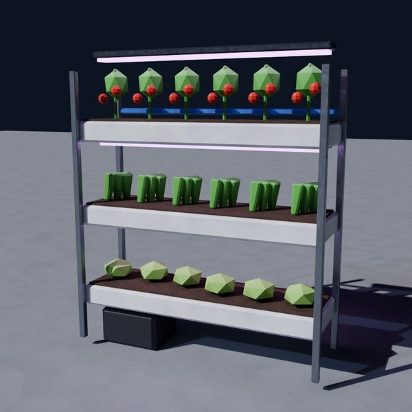
Round 1, before the pick
A chunky framed grow cabinet with an open front, three tiers (lettuce at Abbie's height, herbs, then tomato vines spilling over), pink grow light strips above each tier, an orange status window on the side and a water line. Diegetic: plants droop and the pink light flickers when water or power is low; ripe tomatoes mean harvest time.
The Midjourney pickRound 2, the modelAbbie's eye, 1.1 mRound 1, before the pick
A chunky framed wardrobe module, open at the front, with a warm-lit interior: an empty grown-up suit and an empty kid suit on hangers (no faces), helmets on the shelf, boots below, and a tall orange window in the door panel. Diegetic: a missing suit means someone is outside.
The Midjourney pickRound 2, the modelAbbie's eye, 1.1 m
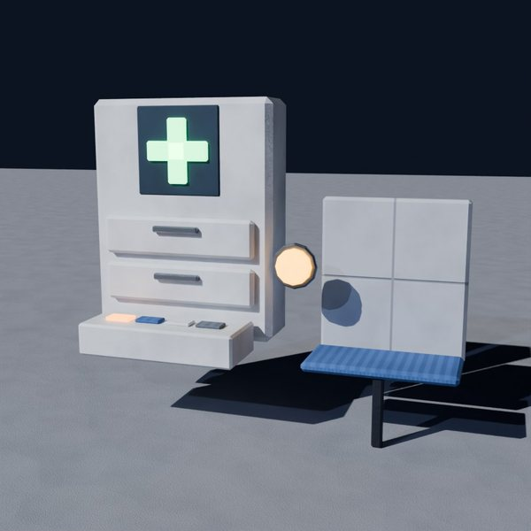
Round 1, before the pick
A tall framed white locker with a glowing green plus on its face (lit = ready), a warm window showing the supplies, two pulled-out drawers of plasters and suit patches, and an amber help button. PG: it fixes scrapes and suit tears, nothing scary.
The Midjourney pickRound 2, the modelAbbie's eye, 1.1 m
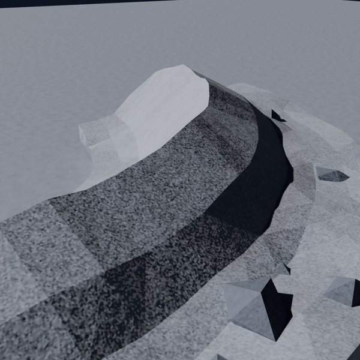
Round 1, before the pick
A half crater 12 m across, a pale dusty bowl floor sweeping up to a crown of broken dark basalt crags along the back of the rim, a few rocks rolled down onto the floor and ejecta outside. Two of these close a crater; the crags make low-g FPS cover and a lookout to climb. Colours follow the regolith grammar (simulations/moon/moon-regolith.mjs).
Triangles
5,768
Parts
64
Mass
337,272.4 kg
Moon weight
55,784.9 kg
Size m
17.15 × 8.91 × 5.29
Stone BasaltDarkStone Regolith
MK-098
Boulder set
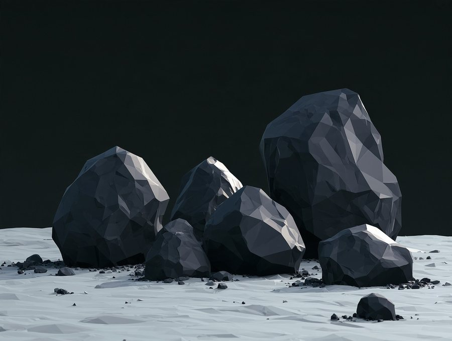
The Midjourney pickRound 2, the modelAbbie's eye, 1.1 m
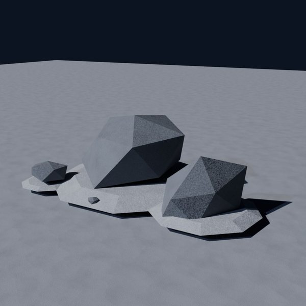
Round 1, before the pick
A cluster of six dark basalt boulders, one tall standing stone with smaller rocks leaning round it, sunk into a low drift of pale dust with pebbles scattered where they landed. Each rock has its own mass, so the small ones can be shoved in low gravity and the big one stops a gem bug.
Triangles
1,000
Parts
17
Mass
23,569.1 kg
Moon weight
3,898.3 kg
Size m
5.02 × 3.66 × 2.84
Stone BasaltDarkStone Regolith
MK-146
Oxygen canister
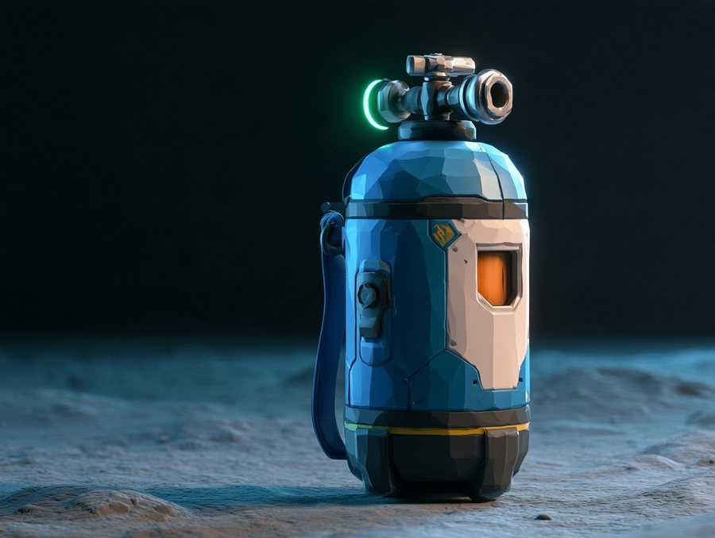
The Midjourney pickRound 2, the modelAbbie's eye, 1.1 m
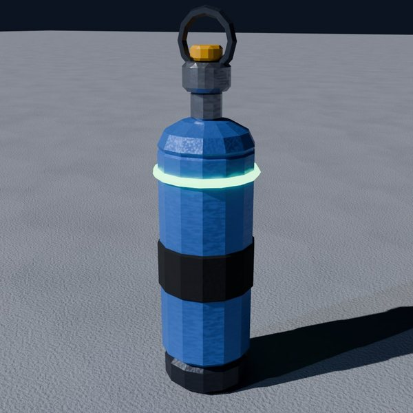
Round 1, before the pick
A stout blue capsule with an off-white front plate holding a warm window (it glows while there's air inside), a dark base ring, a valve block on top with a green "full" ring, and a side strap. Diegetic: the window and ring dim as it empties.
The Midjourney pickRound 2, the modelAbbie's eye, 1.1 m
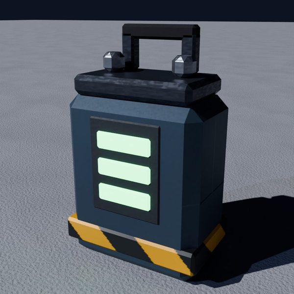
Round 1, before the pick
Round 2, matched to the Midjourney pick: a chunky cube with dark bumper corners, off-white side panels, a carry handle, an orange window on its flank and three green charge bars behind a dark grille (diegetic: the bars say how full it is).
The Midjourney pickRound 2, the modelAbbie's eye, 1.1 m
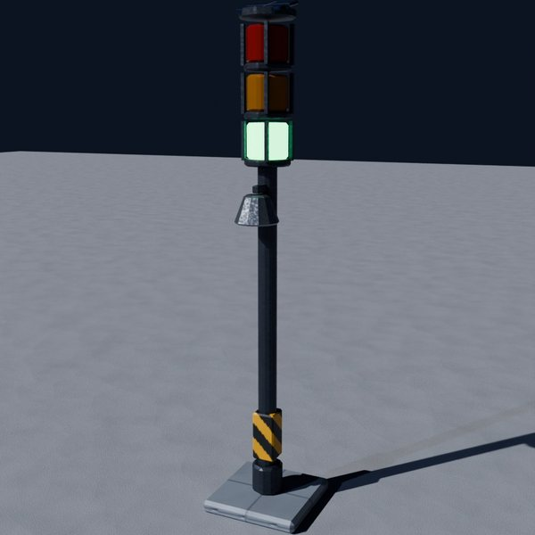
Round 1, before the pick
A framed equipment pedestal with a warm window, a post carrying three caged lanterns (green all's well, amber come back soon, red come inside now), a bell, and a solar cap on top. The game lights one lantern and rings the bell, so the whole base mood is read from the world, not a HUD.
The Midjourney pickRound 2, the modelAbbie's eye, 1.1 m
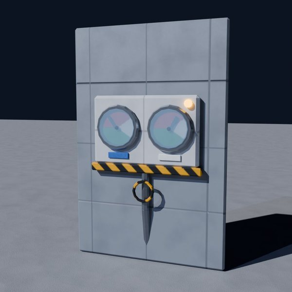
Round 1, before the pick
A panelled wall section with a recessed dark gauge bay holding two big round dials (air and power) with green, white and red arcs, a little control strip, a pipe with a valve wheel running out of it, and a warm porthole beside it. The diegetic replacement for an air meter: Abbie walks up and reads the wall.
The Midjourney pickRound 2, the modelAbbie's eye, 1.1 mRound 1, before the pick
A low round puck 1.8 m across, a thick panelled outer ring with warm orange windows round its side, a green "ready" ring inset on the top and a dark grated launch plate in the middle. Step on it and the plate squashes, the ring chases inward, and you sail in a slow low-gravity arc.
Orange ones are built. The groups are what a whole base needs, from the outside in.
Exterior structures and infrastructure 30
Dome, tower, habitat/hangar, airlock and supply crate were handed over by the Moon Heroes thread (2026-10-23): engineered recipes here, Meshy stays for heroes.
MK-001Solar array wing on a sun-tracking mast built
Machines read as machines: charcoal with role lights, never cyan.
MK-191Helper drone (camera)
MK-192Cargo hauler robot
MK-193Rover tow trailer
MK-194Robotic arm on a rail
MK-195Cleaning bot
MK-196Delivery capsule (lands from orbit)
MK-197Mini excavator
MK-198Crane boom
MK-199Forklift (low-g)
MK-200Mail rocket
How each piece is made
Parts that build the system. Every piece is assembled from named parts (Hatch, LockWheel, StateRing), so you can ask for a change in words, and the game can animate a single part.
Low poly, hero up close. Most pieces are 300 to 3,000 triangles with crisp chamfers. The detail lives in baked maps: base colour, roughness and normal, at 512 or 1024 px.
Material is meaning. Material names are game roles (Metal_Hull, Glass_Window, OrangeBand, Lamp_Green), and each role has a real density. So every part carries its mass in the model file.
The world tells you. Gauges, lamp posts, door light rings, charge bars and frost lines carry air, power and safety. The shooter can run without a HUD bar.
Built for Abbie's size. Everything is checked from 1.1 m eye height. Consoles have a kid step, and the lower bunk and the lettuce tier sit at her height.
Next
The dome and the tower are the first two of the five base buildings the Moon Heroes study handed over. The habitat and hangar, the airlock door and the supply crate follow as soon as Midjourney can draw their pictures. Then the kit goes onto the Moon tile for the shooter.